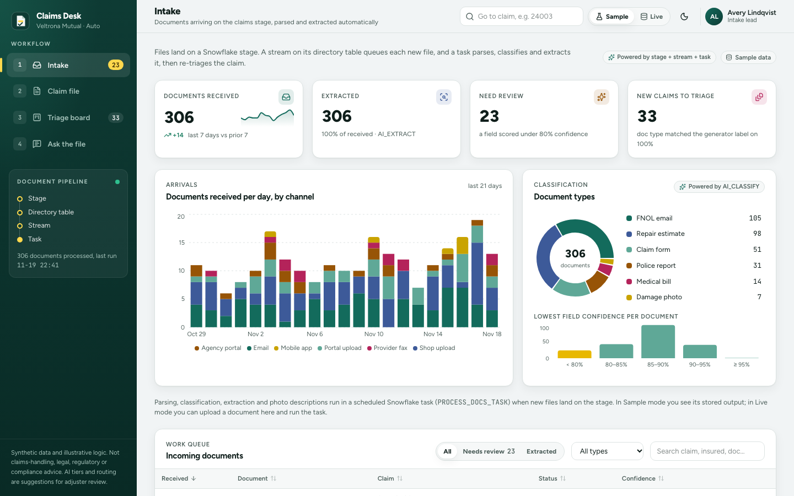
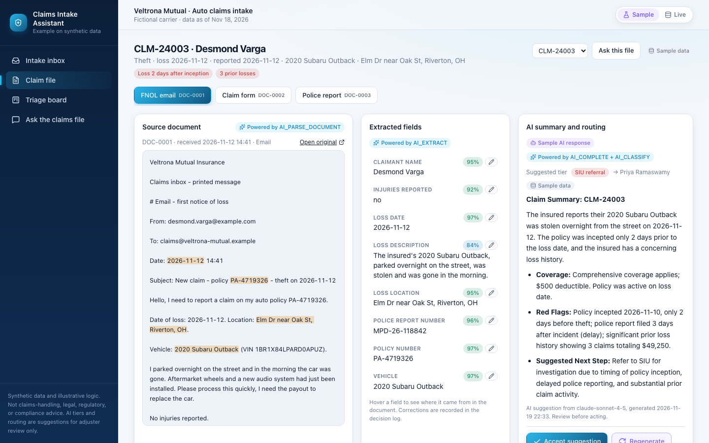
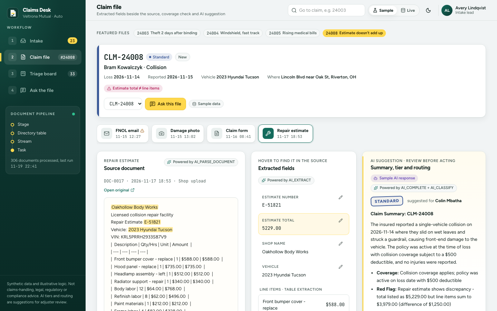
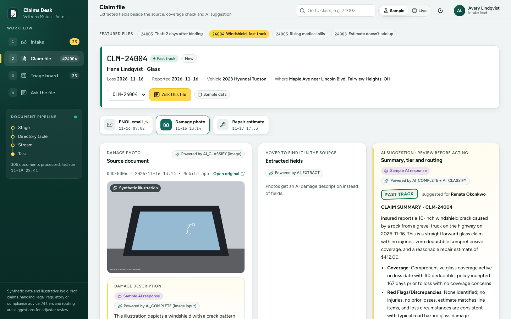
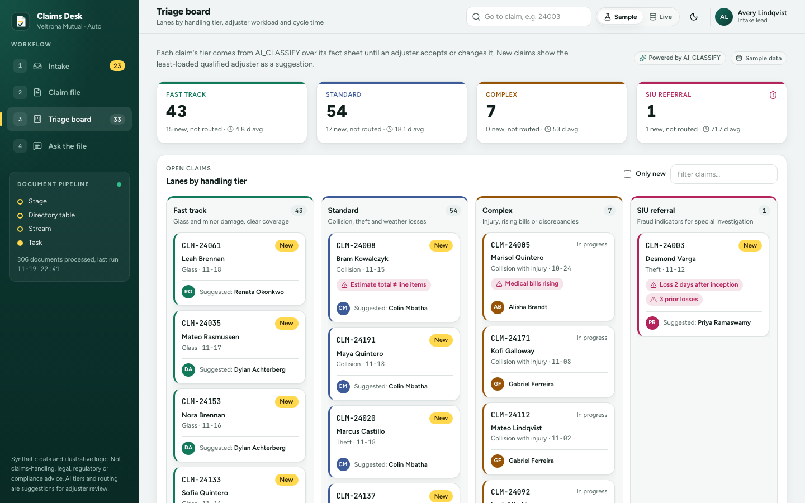
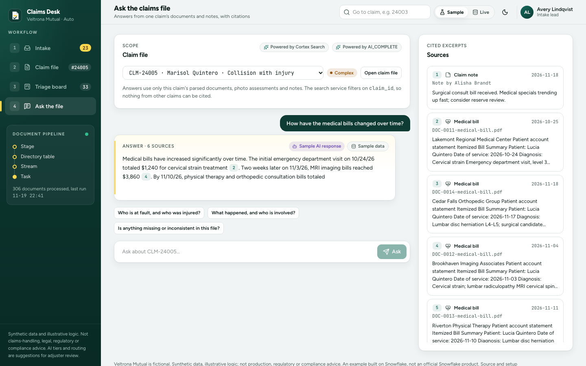

Every claim starts with someone retyping a document
Intake teams read every email and attachment, key the facts into the claim system, check the policy, and decide who should handle it. The signals that matter (a loss right after binding, bills that keep climbing, an estimate that doesn't add up) are easy to miss when the queue is long.
Read once, not twice
Fields are pulled from each document with a confidence score, and shown highlighted in the source so the reviewer can check them in seconds.
Coverage before routing
The policy in force, the deductible, med pay limits and prior losses are checked in SQL against what the documents say.
A suggestion, not a decision
The AI suggests a tier and an adjuster with a short summary. The adjuster accepts, corrects or reroutes, and every decision is logged.
Intake
Files land on a stage; a stream and task process each new one.
stream + taskClaim file
Parsed text, extracted fields and a damage description per photo.
AI_EXTRACTTriage board
Fast track, standard, complex and SIU lanes with adjuster workload.
AI_CLASSIFYAsk the file
Questions over one claim's documents and notes, with citations.
Cortex Search
Four claims tell the story
The synthetic data includes planted claims, so each screen has something to find. Every screenshot is from the app running on synthetic data.

Every document, processed as it lands
New files on the stage are queued by a stream on its directory table, and a task parses, classifies and extracts them. Documents whose lowest field confidence is under 80% are flagged for review.

A theft two days after binding
The coverage check finds the loss 2 days after the policy started, three prior losses with other carriers, and a police report filed late. The AI summary explains why the claim is suggested for SIU referral.

An estimate that doesn't add up
Line items are extracted as a table and summed in SQL. Here the stated total is $1,250 more than the line items, so the summary asks for a corrected estimate.

A windshield claim for the fast track
A photo gets a damage description and severity. With full-glass coverage and a $412 estimate, the claim is suggested for fast track with no deductible.

Lanes, workload and cycle time
Each lane shows open claims by tier with their red flags. New claims show the least-loaded adjuster with the right skills, and the cycle-time chart shows how long each tier takes to close.

Ask the claims file, with sources
For the bodily-injury claim, the answer traces the medical bills in date order and cites each bill and the adjuster's note. Search is filtered to one claim, so nothing from other files can be cited.
What runs on Snowflake
Each capability below ran in Live mode on a Snowflake account in AWS US East 1 in November 2026.
| Step | Snowflake capability | What it does here |
|---|---|---|
| Intake | Stage, directory table, stream, task | New files on the stage are queued by a stream; a task calls one procedure whenever the stream has data. |
| Read | AI_PARSE_DOCUMENT | OCR and layout for every PDF, including estimate tables. |
| Classify | AI_CLASSIFY | Names the document type, and suggests a handling tier from each claim's fact sheet. |
| Extract | AI_EXTRACT | Fields per document type with a confidence score per field; estimate line items as a table. |
| Photos | AI_COMPLETE (image input) | Describes the visible damage and rates its severity. |
| Coverage | SQL views | Policy in force, deductible, days since inception, estimate vs line items, medical bills vs med pay, prior losses. |
| Summary and routing | AI_COMPLETE, SQL | Writes the adjuster summary from the fact sheet and suggests the least-loaded qualified adjuster. |
| Ask the file | Cortex Search, AI_COMPLETE | Searches one claim's documents, photo assessments and notes, then answers with numbered citations. |
| Decisions | Table writes | Accept, correct and route actions are stored with who made them and when. |
Run it two ways
No account
Open the hosted example, or run it locally with Node.js 20.19 or later. AI answers are captured from the live pipeline and labeled "Sample AI response".
git clone https://github.com/sfc-gh-ooral/sfguide-claims-intake-assistant.git cd sfguide-claims-intake-assistant npm install npm run dev
Your Snowflake account
- Run
sql/setup.sqlin a Snowsight worksheet. It creates a dedicated database, an XSMALL warehouse and a least-privilege role, loads the synthetic files and runs the pipeline once. - Register a key pair for your user and copy
.env.exampleto.env.local. - Run
npm run devand switch to Live. - When you're done, run
sql/cleanup.sql.
Needs Cortex AI functions and Cortex Search in your region or through cross-region inference. The README lists every object, the measured cost and time.
Customize with Cortex Code
"Point the pipeline at my stage of FNOL documents and propose the extraction schema from 20 samples."
"Tune the complexity tiers to my routing guidelines and show disagreements with past adjuster decisions."
"Add a subrogation-potential flag with the evidence it uses."
Limits and disclaimer
- All data is synthetic. Veltrona Mutual and every person, shop and clinic in it are fictional. Damage photos are drawn illustrations.
- Tiers come from AI_CLASSIFY with label descriptions and can vary between runs. Test them against your own routing guidelines.
- Routing is a simple load-based round robin over qualified adjusters.
- Results described here are on this synthetic data set. Cost and latency depend on your account, region and model.
Illustrative logic only; not claims-handling, legal, regulatory or compliance advice. This example is provided as is. It is not an official Snowflake product and is not supported by Snowflake Support. Apache 2.0 license.